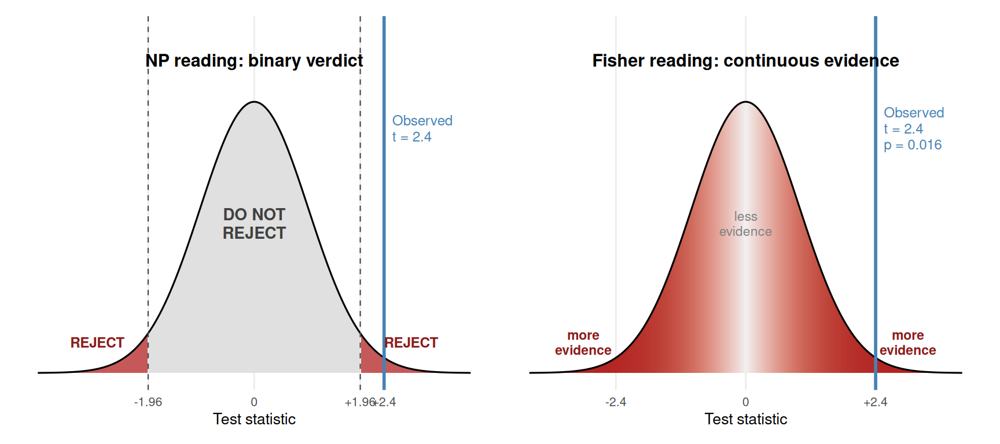
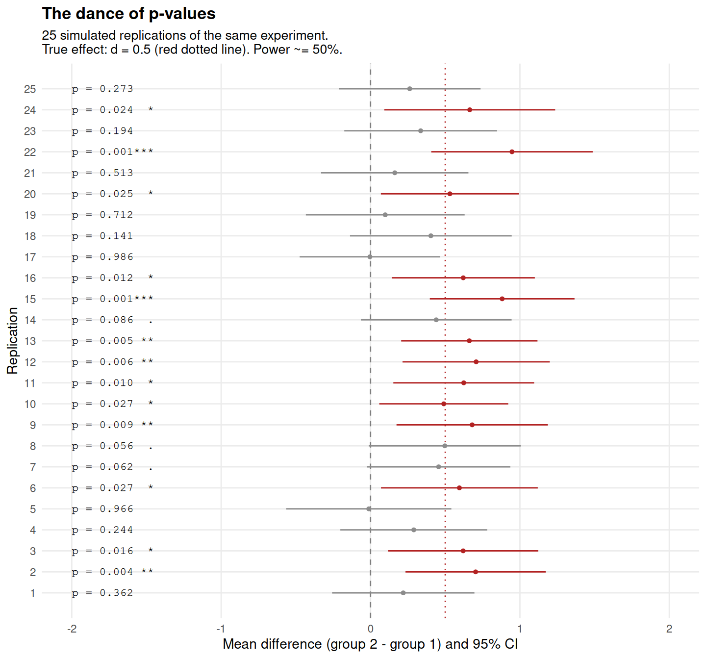
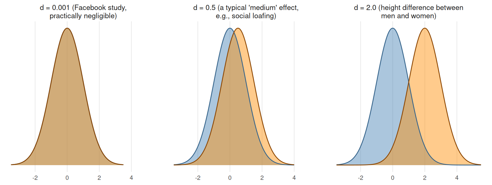
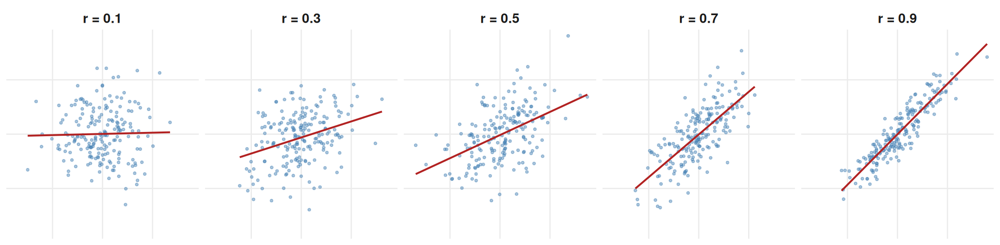
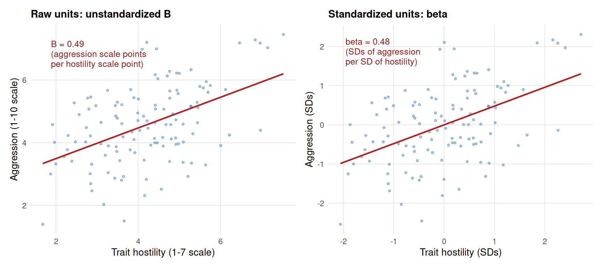
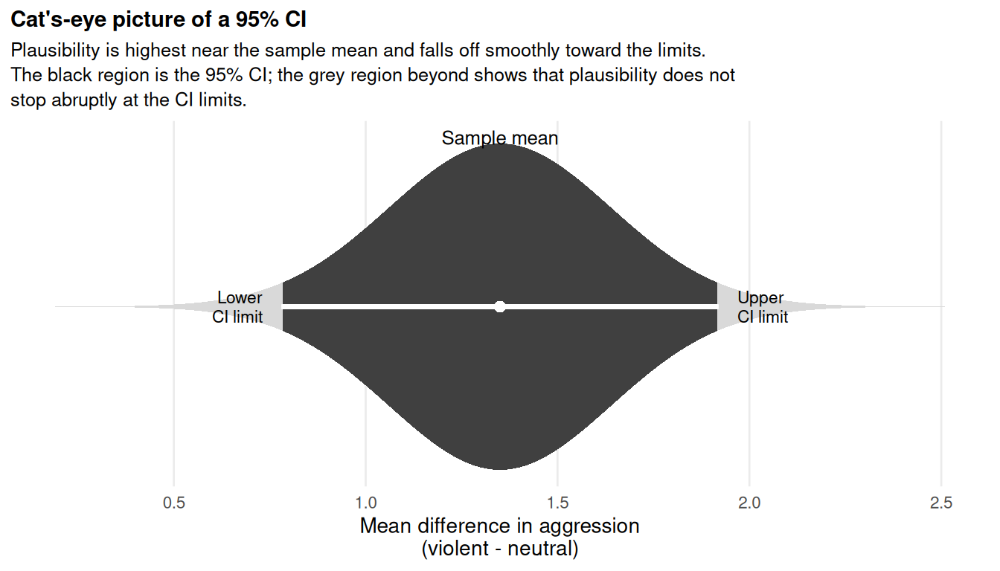
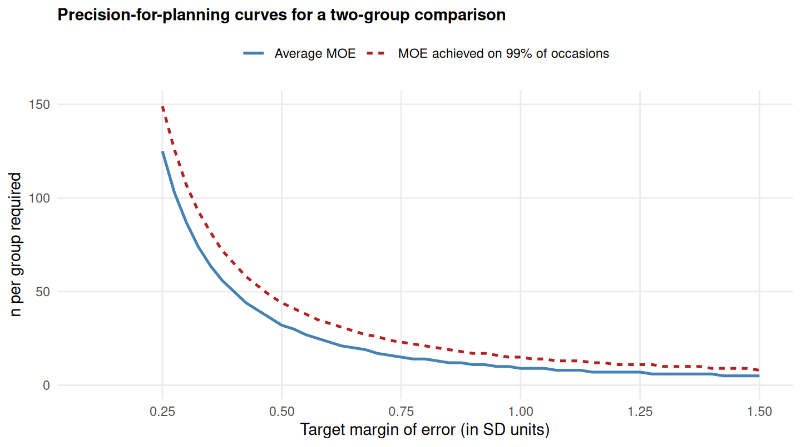
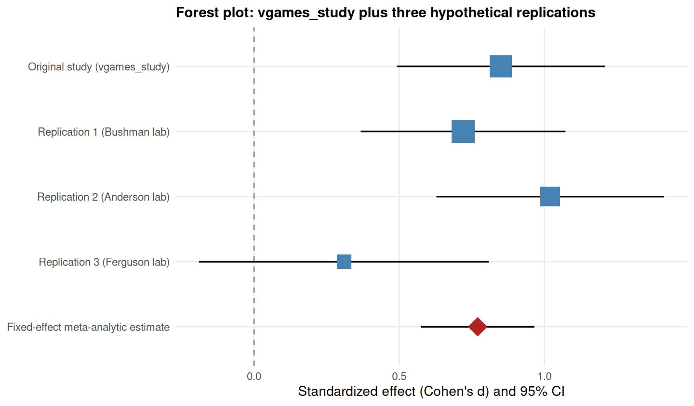
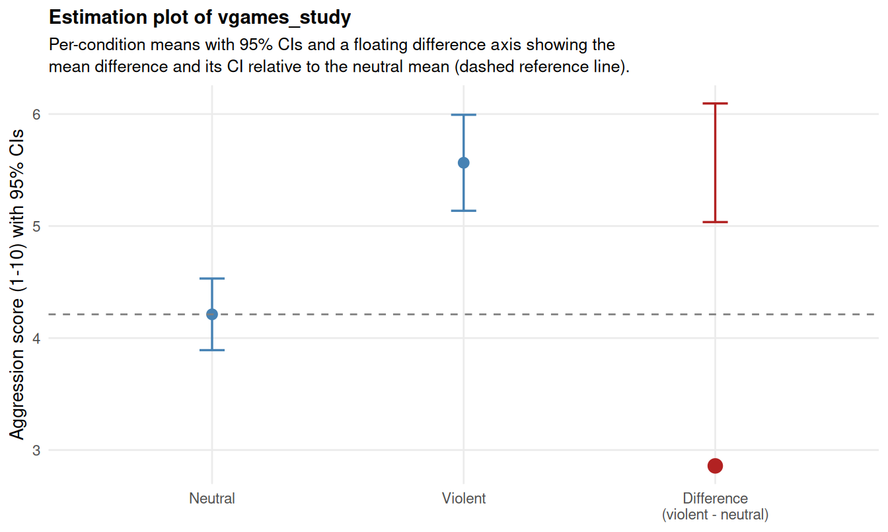
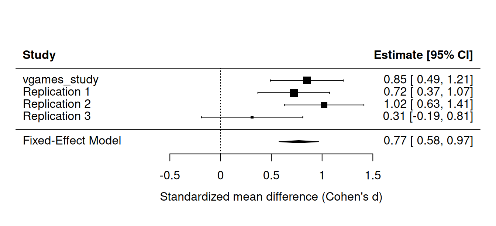

27 Fisher, estimation, and the new statistics (optional)
27.1 Why this chapter is optional
Section 4 has so far developed the Neyman-Pearson framework, the dominant logic for inference in psychology and most empirical sciences. Chapter 26 traced the philosophical commitments that hold the framework together: the objective long-run frequency interpretation of probability, the refusal to assign probabilities to hypotheses, the methodological-falsification stance, and the procedural rather than evidential interpretation of p-values.
This chapter is optional because it takes a different path. A long line of statisticians and methodologists, most prominently Ronald Fisher in the first half of the 20th century and Geoff Cumming and colleagues in the present, have argued that the question we usually want to answer with statistics is not “should I act as if the null is rejected?” but something more like “how strong is the evidence?” or “how large is the effect, and how precisely have I estimated it?” These researchers have proposed alternatives. Fisher kept the p-value but read it evidentially. Cumming and others have advocated dropping the p-value entirely in favor of effect sizes, confidence intervals, and meta-analysis, a program that has come to be known as the new statistics (Cumming, 2014).
This chapter develops both of these alternative threads. It does so in two halves. The first half (sections 27.2 to 27.3) covers Fisher’s evidential reading of the p-value and the empirical phenomenon, the “dance of p-values,” that puts that reading under serious pressure. The second half (sections 27.4 to 27.8) covers Cumming’s estimation program, the tools it relies on (effect sizes, confidence intervals, precision, and meta-analytic thinking), and how to do it in R. Section 27.9 is the honest counterweight: where Fisher and the new statistics are epistemologically weaker than NP. Section 27.10 walks through a worked R example on vgames_study. The chapter draws on Dienes (2008, Chapter 3), Cumming (2012, 2014), and Lakens (2022, Chapters 6 and 7).
27.2 Fisher’s reading of the p-value
The p-value, as we have used it throughout Section 4, is a probability of data given a hypothesis, calibrated as a long-run frequency. In the strict Neyman-Pearson reading (Chapter 22), the p-value plays no evidential role on its own; it is simply compared to the pre-specified α to produce a “reject” or “do not reject” verdict. The procedure is calibrated; the verdict on any one experiment is not.
Fisher saw the p-value differently. To Fisher, the p-value was a continuous measure of strength of evidence against the null hypothesis. Smaller p-values reflected heavier weight against the null, larger p-values reflected lighter weight. There was no fixed α to compare against, and no commitment to a binary decision rule. As Dienes (2008, p. 70) summarizes Fisher’s view: “From a test of significance we have a genuine measure of the confidence with which any particular opinion may be held, in view of our particular data.”
This is a fundamentally different conception of what the p-value is. To NP, the p-value is one input to a calibrated procedure whose long-run error rates we control. To Fisher, the p-value is a number we can read off any single experiment as a gauge of evidence in that single case. The figure below makes the difference concrete. Both panels show the same null distribution and the same observed t-statistic (t = 2.4). The left panel reads it the NP way: there are two sharply distinct zones, a rejection zone (in dark red, in both tails beyond the critical value) and a non-rejection zone (in pale grey, between the critical values). The observation falls in the rejection zone, so the verdict is “reject the null”; there is no further gradation. The right panel reads it the Fisher way: instead of two distinct zones, the area under the curve is shaded with a smooth gradient that gets darker as we move further from zero, representing the fact that observations further from zero carry more weight against the null on a continuous scale.
The left panel has a hard boundary: cross the critical line and the verdict flips from “do not reject” to “reject”, and that is the entire output. The right panel has no boundary at all: the intensity of the red shading varies smoothly from light grey near the center (very little evidence against the null) to deep red in the tails (strong evidence against the null), and the observed t-statistic corresponds to a specific point on that gradient. Both panels are computed from the same observed t = 2.4 and the same null distribution; the difference is what we are willing to say with the number. In Fisher’s reading, an observed p = 0.016 carries more weight against the null than an observed p = 0.04 would carry, and that difference is part of the inference. In the strict NP reading, both lead to the same verdict.
Fisher was explicit about reading the p-value continuously, but he resisted attaching specific verbal categories to specific cutoffs. His actual view was that a smaller p reflects more evidence against the null than a larger p does, with no commitment to a particular cutoff and no automatic verdict. The very common categorical reading in which p = 0.04 is “significant”, p = 0.01 is “highly significant”, and p = 0.06 is “marginally significant” or “trending toward significance” is not Fisher’s view. It is what happens when researchers try to combine Fisher’s continuous reading with NP’s binary decision rule at the same time, the so-called Fisher-NP hybrid that is widely used in psychology in practice. The hybrid deserves a subsection of its own.
This evidential reading has an obvious appeal. According to many researchers, it is what they seem to want from a statistical test. It is also, on its own terms, technically problematic; we will return to that issue in section 27.9. Before we get there, we need to look at an empirical demonstration that puts the evidential reading under pressure: the dance of p-values.
27.2.1 The Fisher-NP hybrid in practice
Most published research in psychology does not use either Fisher’s framework cleanly or Neyman and Pearson’s framework cleanly. It uses an incoherent mixture of the two that statisticians have called the null hypothesis significance testing (NHST) hybrid. Gigerenzer (1993) called it an “incoherent mishmash” and traced its dominance to a generation of textbook writers who blended the two traditions without acknowledging that they were incompatible. The hybrid is what you have probably been taught in introductory courses. It looks like this:
- Set α at 0.05 in advance, which is an NP move.
- Compute the p-value and compare it to α, which is an NP move.
- Report a binary verdict (reject or do not reject), which is an NP move.
- But then also report the exact p-value (for example, p = 0.034, p = 0.001) as if it carried evidential weight in its own right, which is a Fisher move.
- Attach verbal labels to ranges of p-values: “highly significant” for p < 0.01, “significant” for p < 0.05, “marginally significant” or “trending toward significance” for 0.05 ≤ p < 0.10.
This last set of labels is neither Fisher’s view nor NP’s. It is the most visible symptom of the hybrid’s incoherence.
Fisher would have objected to the first three steps. Committing to α at 0.05 in advance and using a fixed cutoff misses the entire point of reading the p-value continuously. From Fisher’s point of view, α = 0.05 is one arbitrary reference point among many, useful as a rough guide but not as a decision rule.
Neyman would have objected to the last two steps. Once you have committed to α and the procedure has produced its verdict, the further gradation of the p-value (p = 0.0001 versus p = 0.03 versus p = 0.04) is not meaningful in his framework. The procedure is calibrated to deliver a binary verdict at the chosen α; it does not become “more reliable” because the p-value happened to come out smaller than α. Reading p = 0.0001 as “highly significant” suggests an extra layer of confidence that the procedure has not actually delivered.
The cost of the hybrid is real and practical. Researchers trained on it routinely attribute evidential weight to small p-values that the framework cannot license. They treat p = 0.06 as a near-miss that could be salvaged by collecting more data, when on NP’s terms it is simply a “do not reject” verdict. They report exact p-values as if those numbers were a stable feature of the experiment, when on NP’s terms only the binary verdict is calibrated and on Fisher’s terms even the continuous reading suffers from the dance we will see in section 27.3. The hybrid borrows the appearance of rigor from each tradition while abandoning the discipline that made either of them coherent on its own.
A clean version of either approach is preferable to the hybrid. If you want NP, commit to the procedure: set α, run the test, report the verdict, and stop reporting exact p-values as graded evidence. If you want Fisher, drop α as a decision criterion and report the p-value as a continuous measure of evidence, with full awareness that this reading will run into the difficulties section 27.3 and section 27.9 will document. What you cannot coherently do is have both at once.
27.3 The dance of p-values
If the p-value is a measure of evidence about an underlying truth, then a stable property of that truth should produce stable p-values across replications. If the truth changes very little but the p-value swings wildly, then the p-value is not measuring the truth; it is measuring something else.
Cumming (2008, 2014) demonstrated this empirically with what he calls the dance of the p-values. The setup is simple. Pick a true population effect, pick a sample size, then run the same experiment many times by drawing fresh independent samples from the same population. Each replication produces its own p-value. Look at how those p-values are distributed.
We can run this simulation ourselves. The figure below shows 25 simulated replications of an independent-samples comparison between two groups of n = 32 each, drawn from populations with means 0 and 0.5 and a common SD of 1 (so a true Cohen’s d of 0.5, a medium effect, with statistical power around 50% to detect it at α = .05). For each simulated experiment, the figure shows the observed mean difference (the dot), its 95% confidence interval (the horizontal bar), and the two-sided p-value. The underlying truth is exactly the same in every simulation: only the random sample differs.

The dance is dramatic. Across 25 replications of an identical underlying truth, the observed p-values range from below 0.001 to above 0.9. Cumming (2014, p. 13) noted that “the dance of the p values is astonishingly wide. You can see more about the dance at tiny.cc/dancepvals… vary the population ES and n, and you will find that even when power is high, in fact in virtually every situation, p varies dramatically.” There is nothing wrong with the simulation, nothing wrong with the procedure, and nothing wrong with the underlying truth. The dance is what the p-value naturally does under random sampling.
This has an immediate consequence for Fisher’s reading of the p-value. If the same true effect produces p = 0.001 in one study and p = 0.4 in the next, and if Fisher would read those two values as “strong evidence” versus “no evidence” respectively, then what Fisher reads as evidence is mostly sampling noise rather than a stable feature of the data and the underlying effect. We will come back to this point in section 27.9.
The dance also illustrates a more direct fact: a single p-value tells you very little about what the next replication will find. Cumming (2014, p. 13) showed that if your first study yields p = 0.05 exactly, an 80% prediction interval for the next study’s one-tailed p runs from approximately 0.00008 to 0.44. The future p-value can be almost anything. The p-value, taken on its own, is a remarkably uninformative prediction of replication outcomes.
If the p-value is doing so little, what should we report instead? This is where the estimation alternative comes in.
27.4 The estimation alternative
Geoff Cumming and a long line of methodologists have argued that statistical practice should shift away from null hypothesis significance testing entirely, toward what Cumming calls the new statistics: effect sizes, confidence intervals, and meta-analysis. The “new” is somewhat misleading: none of these tools is new, all three have been available for decades. What would be new for many fields is to make them the primary output of every study, with p-values and dichotomous decisions either de-emphasized or removed entirely.
Cumming (2014, p. 11) summarizes the program with an eight-step strategy. Reduced to its core:
- Formulate your research question as an estimation question, not a yes/no question. Ask “how large is the effect?” rather than “is there an effect?”.
- Identify the effect size that best answers the question. If the question is about a difference between two means, the effect size is the difference, possibly standardized.
- Pre-specify the procedure (this is shared with NP).
- Compute point estimates and their 95% confidence intervals.
- Plot the estimates with CIs.
- Interpret the estimates and the CIs in context: discuss what the effect size implies in practical and theoretical terms, and what the CI width implies about the precision of your estimate.
- Use meta-analytic thinking throughout: treat your study as one contribution to an accumulating literature.
- Report everything in enough detail that future meta-analyses can include your study.
The whole structure runs in a different direction from NP. There is no fixed α, no “reject” verdict, no calibrated long-run procedure as the primary output. The primary output is an estimate of an effect, with a quantification of its precision.
The rest of this chapter walks through the three pillars of the estimation program: effect sizes, confidence intervals, and meta-analytic thinking. Section 27.7 develops precision-for-planning, which is Cumming’s proposed replacement for the power calculations of Chapter 24. Section 27.9 then steps back and asks where this program is epistemologically weaker than NP.
27.5 Effect sizes
An effect size, in Cumming’s framing, is “simply an amount of anything of interest” (Cumming & Fidler, 2009). Means, mean differences, correlations, regression slopes, and proportions are all effect sizes. The point of asking about effect size is to ask how much something is, not merely whether it is non-zero.
For comparing two means, the most widely used effect size is Cohen’s d, the standardized mean difference. The basic formula for two independent groups is
\[ d = \frac{M_1 - M_2}{s_p} \]
where \(s_p\) is a standardizer chosen to express the difference in standard-deviation units. As we have noted throughout Section 4, the recommended standardizer is the pooled within-group standard deviation when variances are roughly equal, the control-group standard deviation when the treatment is expected to change variability, or in repeated-measures designs the standard deviation of the difference scores. The choice of standardizer is consequential: the same raw mean difference can produce very different values of d depending on which SD we divide by.
Cumming (2012, Chapter 11) draws the consequence sharply, with what he calls the rubber-ruler metaphor. Cohen’s d is the ratio of two estimated quantities: the original-units effect and the standardizer. If we replicate the study, both numerator and denominator will be different. The unit of measurement (the standardizer) is stretching in and out between studies. We therefore have to be careful when interpreting d and especially when comparing d values across conditions or studies. Do the raw effects differ, does the standardizer differ, or do both differ?
Two examples from Lakens (2022, section 6.2 and 6.3) sharpen the point. In 2014, Facebook published a study in which it manipulated the emotional content of about 700 000 users’ news feeds and measured the emotional valence of their subsequent posts. The reported effect of reducing positive posts on the percentage of positive words people produced was Cohen’s d = 0.02; the effect on negative words was d = 0.001. These effects were statistically significant because the sample was enormous, but practically negligible. Lakens notes that in the Facebook setting, d = 0.001 corresponds to a person needing to type roughly 20 000 words on Facebook before we would expect to observe one additional negative word compared to the control condition. A statistically significant non-zero effect does not entail a practically meaningful effect. Interpreting the effect size, not the p-value, is what tells us whether the result matters.
The opposite problem is also instructive. Lakens (2022, section 6.3) discusses the much-cited “hungry judges” study in which judges’ parole decisions appeared to drop from about 65% to near 0% over the course of a day and then reset after a break. The reported effect corresponds to a Cohen’s d of approximately 2. Effects of this size are extraordinarily rare in psychology; almost nothing in the meta-meta-analysis by Richard, Bond, and Stokes-Zoota (2003) reaches that magnitude.
Lakens’s point is worth unpacking carefully because the reasoning is a useful sanity check more generally. The argument runs like this. d = 2 is roughly the magnitude of the height difference between men and women: a difference so obvious that you do not need a study to convince anyone of it. Walk down any street, look at the people, and you will see the pattern immediately. Effects of this size, when they reflect a real underlying mechanism, are unmissable in everyday experience; that is what d = 2 looks like in the world. So if a psychological mechanism really produced an effect that large, every non-researcher with any exposure to the relevant context would already know about it without a study being run, just by living their daily life. We do not need an experiment to tell us that men are taller than women, that water is wetter than sand, or that running uphill is harder than running downhill: those are d = 2 phenomena, and they announce themselves. When a psychology paper reports d = 2 for a mechanism that is not already obvious to everyone (such as judges’ hunger affecting parole decisions), the size of the effect itself is a strong signal that something is wrong. In this specific case, the something was a confound: the cases that come up later in the day are systematically different from those that come up earlier (Weinshall-Margel & Shapard, 2011). Effect sizes give us a sanity check that p-values do not, because effect sizes can be compared against everyday reality in a way that p-values cannot.
The figure below illustrates what different values of Cohen’s d mean in terms of overlap between distributions. For each panel, two normal distributions are shown with mean separation equal to d (with both distributions having SD = 1). The vertical line is the midpoint. The shaded region is the overlap; the unshaded region is the part of one distribution that falls beyond the other.

For d = 0.001, the two distributions are visually identical; the difference is purely a population-level statistical fact with no observable individual-level consequence. For d = 0.5, the typical “medium” effect, the distributions are clearly distinguishable but heavily overlapping; about 38% of the area of one curve lies beyond the mean of the other. For d = 2.0, the kind of effect we see in physical-height comparisons, the distributions are clearly separated but still substantially overlapping; even with this enormous standardized effect, individuals from the smaller-mean distribution often exceed the mean of the larger-mean distribution. The lesson is that even large standardized effects do not imply that every individual in one group differs from every individual in the other.
A further point about d is worth emphasizing. The sample d is a biased estimator of the population effect, with the bias being larger for smaller samples. Hedges’s correction (sometimes called Hedges’s g or d unbiased) removes most of the bias. The effectsize package in R returns the corrected version by default in most calls. The bias is small for sample sizes typical of psychology studies but worth knowing about.
27.5.1 Pearson’s correlation r
For two continuous variables, the most widely used effect size is Pearson’s correlation coefficient r. We covered the basic correlation in Chapters 15 and 16 as a feature of the simple linear model; here we focus on r specifically as an effect-size measure.
The correlation r ranges from −1 (perfect negative linear association) through 0 (no linear association) to +1 (perfect positive linear association). The magnitude |r| encodes the strength of the linear association; the sign encodes its direction. Like Cohen’s d, r is unitless: it does not depend on the original units of the two variables, which makes it convenient for comparing effects across studies that used different measures.
The figure below illustrates what different values of r look like as scatterplots. The five panels show simulated bivariate normal data of n = 200 each, at r = 0.1, 0.3, 0.5, 0.7, and 0.9.

A correlation of r = 0.1 shows essentially no visible relationship; the cloud of points is roughly circular. By r = 0.3 (Cohen’s “medium” benchmark for correlations), the cloud starts to lean a little; by r = 0.5, the leaning is clearly visible; by r = 0.7, the points trace a recognizable line through the cloud; by r = 0.9, the points almost fall on a line. Most observed correlations in psychology and the social-behavioral sciences fall between r = 0.1 and r = 0.4 (Richard, Bond, & Stokes-Zoota, 2003); larger correlations than r = 0.5 are unusual outside of physical-measurement domains.
A useful related quantity is r-squared (r²), the coefficient of determination. r² represents the proportion of variance in one variable that is linearly explained by the other. So r = 0.3 corresponds to r² = 0.09, or 9% of the variance explained. This is one place where it is easy to feel that a numerically small effect “really is small”: 9% does not sound like a lot. But Funder and Ozer (2019) warn against this reading, calling the practice of squaring the correlation to dismiss small effects “actively misleading.” A correlation of r = 0.3 between, say, the conscientiousness of a job applicant and their later job performance is small in r² terms but very useful in practice if you have to choose between many applicants. The size of an effect is not the same as its practical importance, and the proportion of variance is just one (often unhelpful) way of expressing the size.
27.5.2 Regression coefficients: unstandardized B and standardized β
When the relationship between a predictor and an outcome is modeled with a regression (Chapters 15 to 20), the slope is itself a natural effect size. Two versions of the slope are commonly reported, and the difference between them is worth being clear about.
The unstandardized regression coefficient B (also written b or b₁ for the slope of a single predictor) is the slope in the original units of the predictor and outcome. If we regress aggression (scored 1 to 10) on trait hostility (scored 1 to 7), the slope B tells us how many aggression-scale points the predicted aggression score changes for each one-point increase in trait hostility. The advantage of B is that its meaning is concrete: it is in the units you actually measured. The disadvantage is that comparison across studies that used different measures is difficult, because the unit of B differs between studies.
The standardized regression coefficient β (the Greek letter beta, often called the standardized slope or the beta weight) expresses the same slope but in standard-deviation units. Specifically, β is the slope you obtain if you first standardize both the predictor and the outcome (subtract each variable’s mean and divide by its standard deviation), and then run the regression on the standardized variables. β tells you how many standard deviations the outcome changes for each one-standard-deviation increase in the predictor. The advantage is direct comparability across studies and across predictors with different units. The disadvantage is that β depends on the standard deviations of the predictor and outcome in your particular sample; if your sample is more or less variable than another sample, your β will be correspondingly larger or smaller, even when the underlying causal mechanism is the same. β has the same rubber-ruler problem we saw for Cohen’s d.
A useful identity is worth stating explicitly. For a simple linear regression with a single continuous predictor, the standardized slope β is mathematically equal to Pearson’s r. The two are different names for the same number in that case. Once you add a second predictor, β and r diverge: β is then the partial standardized association after controlling for the other predictors, while r remains the pairwise (uncontrolled) association.
The figure below shows the contrast between B and β directly. The left panel shows a regression of aggression on trait hostility in original units, with the slope B. The right panel shows the same data and the same regression line after both variables have been standardized, with the slope β. The data are the same; only the axes change.

The slope visible in the left panel is moderate (about 0.6 aggression points per hostility point), readable directly in the units of the original measures. The slope visible in the right panel is the same line, but with both axes rescaled to express the variables in standard-deviation units; the slope number now expresses how many standard deviations the outcome moves per standard deviation of the predictor. The data are identical; only how we read the slope has changed. B answers “how much does the outcome change in scale points?”; β answers “how much does the outcome change in standard deviations?”
The choice between reporting B and β is field-dependent. In psychology, β is conventionally the default for multiple regression reports, partly because it allows readers to compare the relative magnitudes of different predictors within the same model. In clinical and biostatistical settings, B in original units (with units explicitly named) is preferred because it is more directly interpretable for clinical decisions: “blood pressure decreased by 5 mmHg per 10 mg of the drug” is more actionable than “blood pressure decreased by 0.3 SDs per 1 SD of dose.” When you report either, name your units clearly and, ideally, report both alongside each other.
27.5.3 Beyond d, r, B, β: a richer effect-size landscape
The effect sizes covered in this section (Cohen’s d, Pearson’s r, B, and β) cover the most common situations in the basic statistical methods this book teaches. They are not the only effect sizes that exist, and for many study designs other effect sizes are more appropriate. Each ANOVA-style design has its own effect-size measures (η², ω², Cohen’s f, partial η²). Categorical and proportional outcomes use odds ratios, risk ratios, log-odds, Cohen’s h, and Cramér’s V. Within-subjects designs need their own corrections to Cohen’s d (Cohen’s d_z, d_av). Tests of variability differences have their own effect-size measures. Robust and non-parametric situations require yet others.
For a thorough applied treatment of this larger effect-size landscape, including how to compute each effect size in R, the open educational resource by Jané, Xiao, Yeung, and colleagues (2024), Guide to Effect Sizes and Confidence Intervals, is the best single reference. It is available online at https://matthewbjane.quarto.pub/. The Guide is a collaborative, continuously updated resource with chapters on standardized mean differences, correlations, categorical and proportional data, effect sizes for ANOVAs, variability differences, non-parametric effect sizes, regression coefficients, and the artifacts and biases that affect each. It also has practical chapters on reporting effect sizes and confidence intervals, on which R packages to use for which calculation, and on converting between effect-size families (essential for meta-analysis when studies in the same literature used different outcome measures). If you find yourself reading the methods sections of papers in your area and encountering an effect size you do not recognize, this is the reference to consult.
The recommendation from this section is concrete. Every analysis you report should include an effect size, and you should interpret what that effect size means in the context of your study. Cohen’s verbal labels of “small” (d = 0.2), “medium” (d = 0.5), and “large” (d = 0.8) are arbitrary benchmarks; both Cohen himself and contemporary methodologists (Cumming, 2014; Lakens, 2022, §6.5) warn against using them as substitutes for substantive interpretation. The right comparison points are the SESOI (which you established in Chapter 24) and the effect sizes of comparable studies in the same literature.
27.6 Confidence intervals: meaning and interpretation
The second pillar of the new statistics is the confidence interval. We have used CIs throughout Section 4 alongside p-values; in the estimation framework, the CI is the primary output, often without any p-value being computed at all.
The strict frequentist definition of a 95% CI is procedural: it is an interval produced by a procedure with the property that, in the long run, 95% of intervals produced this way will contain the true population parameter. As we noted in Chapter 22 and again in Chapter 26, this is not the same as saying “this particular interval has a 95% probability of containing the parameter.” Under the objective interpretation of probability, parameters do not have probabilities. The 95% is a property of the procedure, not of any individual interval.
Cumming (2014, pp. 16-18) offers five different ways to interpret a CI, each useful in different contexts.
One from an infinite sequence. The interval we computed is one draw from the long-run procedure. In the long run, 95% of such intervals contain the parameter and 5% miss. Most of the time, our interval is one of the good ones; sometimes, it is one of the 5% that misses. We do not know which. This is the strict frequentist interpretation and the one most carefully defended in Lakens (2022, section 7.3).
Focus on our interval. The interval defines a set of plausible values for the parameter, with values outside it relatively implausible. If the interval is short and far from zero, the effect is precisely estimated and clearly different from zero. If the interval is wide, the study is imprecise and you cannot draw a sharp conclusion about effect size. This is the interpretation that is most useful in practice.
Prediction. Cumming and Maillardet (2006) showed that on average a 95% CI is approximately an 83% prediction interval for the mean of a replication study. The next replication’s sample mean has about a five-in-six chance of falling within your current interval. This is much more useful than a single p-value when thinking about what a replication is likely to find.
Precision. The half-width of the CI is the margin of error (MOE), and it is a measure of precision. Higher precision means a smaller MOE, which means a shorter CI. Sometimes a study with a wide CI is uninformative even when it produces a significant p-value, because the wide CI is consistent with both negligible and enormous true effects.
The cat’s-eye picture. Cumming (2007) introduced a visualization that captures the gradient of plausibility within a CI. Rather than treating all values inside the interval as equally plausible, the cat’s-eye picture shades the interval according to the sampling distribution centered on the sample mean. Values near the center are about seven times more plausible than values near the limits.
The figure below shows the cat’s-eye picture for a hypothetical estimate of the violent-versus-neutral aggression difference in vgames_study.

The black region is the 95% CI, the same interval you would obtain from t.test(). The grey region beyond it reflects the smooth fall-off of plausibility: values just outside the CI are not impossible, they are merely less plausible than values just inside. This shape is useful as a corrective against the common error of treating the CI limits as a sharp cliff, with everything inside equally credible and everything outside equally incredible.
One final detail. The duality between two-sided NP tests and CIs (Chapter 22) means that a 95% CI that does not contain a hypothesized value corresponds to a two-sided test that rejects that value at α = .05. In the strict estimation framework, this duality is deliberately downplayed: you are not supposed to be making reject-or-not-reject decisions, you are supposed to be interpreting the estimate and its precision. In practice the duality is hard to escape: most readers cannot help asking whether the CI contains zero. We will return to this point in section 27.9 when we ask what the CI actually adds, given that it is mathematically the same information as the corresponding p-value.
27.6.1 Common misconceptions about confidence intervals
The CI is one of the most commonly reported and most commonly misinterpreted statistics in psychology. Four misconceptions are particularly widespread and worth addressing explicitly. Lakens (2022, Chapter 7) and Morey, Hoekstra, Rouder, Lee, and Wagenmakers (2016) develop these at length.
Misconception 1: “There is a 95% probability that the true parameter lies within this 95% CI.” This is the most common reading and it is incorrect under frequentist probability. As we have repeated throughout Section 4, parameters do not have probabilities under the objective interpretation; the 95% is a property of the procedure, not of any individual interval. Once you have computed a CI from your data, the true parameter either lies inside or outside; there is no “95% probability” attached to your specific interval. Even Cumming himself, in the same paper that calls for replacing p-values with CIs, slips into this Bayesian-sounding reading: “we can be 95% confident that our interval includes μ and can think of the lower and upper limits as likely lower and upper bounds for μ” (Cumming, 2014, p. 16). Lakens (2022, section 7.3) flags this as wrong: “Both these statements are incorrect.”
The corrected statement is this. The procedure that produced this CI has the long-run property that 95% of intervals produced this way contain the true parameter. Your interval might be one of the 95% that capture the parameter, or it might be one of the 5% that miss. You cannot tell from the data alone. If you want to say “I believe with 95% confidence that the parameter is in this interval,” you have left the frequentist framework and are doing something Bayesian, which is the subject of Chapter 28.
Misconception 2: “A 95% CI captures 95% of future replications’ means.” This is the capture-percentage misconception. As Lakens (2022, section 7.8) explains, the capture percentage of a single CI (the proportion of future means it will contain) is on average only about 83.4%, not 95% (Cumming & Maillardet, 2006). Moreover, the actual capture percentage for any individual CI depends on whether the observed sample mean happens to be close to the true population mean: if your sample mean differs from the population mean (which is almost always the case), your CI will systematically over-capture or under-capture future means. The 95% applies to whether this CI contains the parameter, not to whether it contains future sample means.
This is why the dance figure in section 27.3 is so striking: across 25 simulated replications, any one of those 25 CIs would have captured only a fraction of the other 24 replications’ means. Look back at the figure and pick any single horizontal bar: how many of the other 24 sample means fall within it? Almost never 95%.
Misconception 3: “If two 95% CIs overlap, the difference between the groups is not statistically significant.” This is widespread and is often used as a “rule of eye” for reading published figures. It is wrong in one direction and unreliable in the other. Cumming and Finch (2005) show that for two independent groups with equal-sized CIs, the CIs can overlap by quite a lot, up to roughly half the average margin of error, and the difference can still be statistically significant. The eye-test underestimates how far apart the means really are.
The correct way to test a difference is to compute the CI on the difference itself, not to inspect the overlap of the two separate CIs. The 95% CI on the difference is the right object; the overlap or non-overlap of the two within-group CIs is at best a rough proxy and at worst misleading. (Note that this misconception is even more dangerous for paired or repeated-measures designs, where the CIs on the two conditions can overlap completely while the CI on the difference excludes zero very clearly.)
Misconception 4: “A non-significant result with a wide CI means there is no effect.” A wide CI means the study was imprecise; it does not tell us anything direct about the size of the effect. A CI that runs from, say, −0.5 to +1.5 is consistent with the null, but it is also consistent with a substantively large positive effect. The right interpretation of a wide CI is that the study is uninformative, not that the null hypothesis is supported. Concluding “no effect” from a wide CI is the same mistake as concluding “no effect” from an underpowered non-significant p-value (recall the severity discussion in Chapter 26 and the SESOI discussion in Chapter 24). If you want to conclude that the effect is small or absent, you need either an adequately powered study with a non-significant result, or an equivalence test against the SESOI, not a wide CI.
A practical exercise: every time you see a CI in a published paper, ask yourself which of these four misconceptions the author appears to be making, and what the correct reading would be. The exercise will sharpen both your reading of the literature and your reporting of your own results.
27.7 Precision: width as the primary output
The CI’s width is what Cumming calls precision. A narrow CI is precise; a wide CI is imprecise. Precision depends on the standard error, which depends on sample size, on the standard deviation of the outcome, and on the design (within-subjects vs between-subjects, for example). For independent groups, the standard error of the difference is
\[ SE_{M_1 - M_2} = s_p \sqrt{\frac{1}{n_1} + \frac{1}{n_2}} \]
and the 95% CI half-width (the MOE) is approximately \(1.96 \times SE\) for large samples and \(t_{0.975, df} \times SE\) in general.
The practical consequence is that you can plan a study for precision rather than for power. This program is called accuracy in parameter estimation (AIPE), introduced by Maxwell, Kelley, and Rausch (2008) and developed in Cumming (2012, Chapter 13). Rather than asking “what sample size gives me 80% power to detect an effect of size d at α = .05?” (the power-for-planning question from Chapter 24), you ask “what sample size produces a 95% CI no wider than this target?” The CI width is what most directly determines whether your study will be informative.
The figure below shows what target precision implies for sample size in a two-independent-groups design. The horizontal axis is the target margin of error in standard-deviation units (so MOE = 0.4 means the CI extends 0.4 SD above and below the point estimate). The vertical axis is the n per group required to achieve that average precision. The lower curve is for average precision; the upper curve uses an assurance level of 99%, meaning the CI width will hit the target on 99% of occasions.

The curves show some practical realities. To achieve a CI half-width of 0.5 SD (a moderately precise estimate), you need about n = 32 per group on average. To achieve a half-width of 0.25 SD (high precision), you need about n = 128 per group. To go from 0.5 to 0.25 SD costs four times the sample. Precision is expensive in the same way that power is expensive, but it points at a different goal.
Precision-for-planning and power-for-planning give similar sample sizes for many typical studies. The conceptual difference is important. Power-for-planning asks “will I detect the effect at the level I committed to?” Precision-for-planning asks “will my estimate be informative regardless of where the effect happens to be?” The latter question is more naturally aligned with the estimation framework, where the primary output is an estimate of an effect, not a verdict on a hypothesis. If you are doing exploratory work, or work where the substantive question is “how big is this?”, precision-for-planning is often the right framing. If you are doing confirmatory work with a pre-specified hypothesis to be tested against a SESOI, power-for-planning is the right framing.
27.8 Meta-analytic thinking
The third pillar of the new statistics is meta-analytic thinking. Cumming’s central observation here is that no single study, on its own, is decisive. Every study contributes an estimate with some precision; the way knowledge accumulates is by combining estimates across studies through meta-analysis. The implication is that every study should be designed and reported with future inclusion in a meta-analysis in mind.
The forest plot is the central visualization of meta-analytic thinking. The figure below shows a forest plot combining our vgames_study result with three hypothetical replications, each with its own sample size and effect estimate. The bottom row is the pooled estimate from a fixed-effect meta-analysis.

A few features of the forest plot are worth noticing. The studies vary in their point estimates (from d = 0.31 to d = 1.02), but every individual CI is wide, reflecting moderate sample sizes within each study. The pooled meta-analytic estimate is in the middle (around d = 0.74) and has a much tighter CI than any individual study. This is the precision gain from combining evidence. Note also that one of the studies (Ferguson) has a CI that overlaps zero, but its inclusion in the meta-analysis pulls the pooled estimate slightly downward without negating it. The meta-analytic logic does not throw out studies whose CIs straddle zero; it weighs them appropriately.
Meta-analytic thinking has a direct ethical dimension that Cumming (2014) emphasizes. If individual studies are to combine usefully, they all have to be reported, including non-significant ones. Selective reporting (publishing only studies whose p-values cross a threshold) systematically inflates the pooled estimate and corrupts meta-analysis. This is the same point Chapter 25 made about pre-registration and the role separation of analyst and claim-maker: meta-analytic thinking and pre-registration are not separate concerns, they support each other.
We will not develop the technical details of meta-analysis here. The R package metafor provides a complete toolkit for fitting random-effects and fixed-effect meta-analyses, producing forest plots, and conducting moderator analyses. Section 27.10 illustrates the simplest case.
27.9 Where Fisher and the new statistics are epistemologically weaker than NP
The estimation framework is appealing. Many of its specific recommendations (report effect sizes, report CIs, plan for precision, think meta-analytically) are sensible regardless of which framework you favor. But it has four important weaknesses relative to Neyman-Pearson, and an honest book has to lay them out.
1. Fisher’s p-value as evidence is conceptually incoherent. This is the point Dienes (2008, Chapter 3) develops most sharply. The p-value is mathematically defined as a probability of data given the null hypothesis. Under the objective interpretation of probability (Chapter 26), this probability is a long-run frequency: it is the proportion of times, in an indefinite repetition of the experiment under H0, that the test statistic would be at least as extreme as the one observed. As a long-run frequency, the p-value is naturally a property of the procedure, not of the individual experiment. Fisher wants to read it as a property of the individual experiment, “the strength of evidence in this single case”. But what would “strength of evidence” be a probability of? It cannot be the probability that the null hypothesis is true (we covered that fallacy in Chapter 22). It cannot be the probability of the observed data alone (the data are the data, they have already happened). It is the tail probability of the test statistic under the null, which is a long-run frequency, which lives in the procedure, not in the individual case. The evidential reading therefore depends on either a tacit Bayesian step (the p-value is like the posterior probability of the null) or an unstated belief that long-run frequencies somehow attach to individual events. Both moves are illegitimate. As Dienes (2008, p. 70) puts it, “On a frequentist notion of probability, this use of the p-value does not follow at all.”
2. The dance of p-values shows the evidential reading does not survive replication. This is the direct empirical strike against Fisher, even setting aside the conceptual problem. If Fisher reads p = 0.001 as “strong evidence” and p = 0.4 as “no evidence,” but the same true effect can produce both p-values in successive replications, then what Fisher is reading is not a stable property of the data and the underlying effect. It is mostly sampling noise. We saw in section 27.3 that with a true Cohen’s d of 0.5 and n = 32 per group, the p-value ranges from below 0.001 to above 0.9 across replications. Under Fisher’s reading, these replications would deliver wildly different conclusions about “the strength of evidence,” even though by construction the underlying truth and the experimental procedure are identical. A measure of evidence that swings this much under fixed underlying truth is not measuring evidence; it is measuring noise. This problem is internal to Fisher: it does not depend on accepting NP’s calibrated-procedure framing. It says that even if you want a continuous measure of evidence, the p-value is a poor instrument for the purpose.
The intuition can be sharpened with a simple analogy. Suppose I claim that a particular bathroom scale measures weight, and I prove this by stepping on the scale once and getting 75 kg. If I step on it again three seconds later and get 71 kg, then a third time and get 79 kg, and a fourth time and get 60 kg, you would (correctly) conclude that the scale is not really measuring weight, even if its long-run average happens to be near 75. The scale’s reading is being driven by something other than the quantity I want it to measure. The p-value behaves similarly under fixed underlying truth and a fixed procedure: it bounces. Whatever it is measuring, it is not measuring a stable feature of the experiment that a working notion of “evidence” would require.
The dance of p-values does not put pressure on the NP reading of the p-value, because NP never claimed the p-value carried evidence in the first place. The procedure is calibrated; the verdict is a binary decision. What is unstable across replications is the verdict itself in roughly the rate that the long-run procedure predicts (about 50% rejection at power = 50%, as in our simulation), and this is what NP says will happen. The dance is precisely the kind of variability NP accounts for. It is a problem for Fisher because Fisher needs the p-value to carry stable evidential weight; it is not a problem for NP because NP does not.
3. Confidence intervals do not deliver belief. Cumming (2014, p. 16) writes that “we can be 95% confident that our interval includes μ and can think of the lower and upper limits as likely lower and upper bounds for μ.” This is technically incorrect under the frequentist interpretation of probability, and Lakens (2022, section 7.3) is explicit on the point. As we developed in Chapter 22 and again in Chapter 26, an individual CI either contains the parameter or it does not; under the objective interpretation of probability, “this interval has a 95% probability of containing the parameter” is meaningless. The 95% is a property of the procedure that produced the interval, not of the interval itself. Cumming’s language is convenient but slips toward a Bayesian reading that the frequentist machinery does not license. The estimation framework cannot give you belief; if belief is what you want, you need actual Bayesian methods (Chapter 28).
4. The CI is not a replacement for the p-value, because the two carry the same information. A natural reading of Cumming’s program is that we should simply replace p-values with confidence intervals: stop reporting the p-value and instead report the estimate with its CI. This sounds like a clean break from NP and a step toward estimation thinking. The move is more cosmetic than it appears.
A 95% CI is mathematically derived from the same ingredients as the p-value: the point estimate, the standard error, and the chosen confidence level. If you have the point estimate and the standard error, you can compute both the p-value (against any null value) and the CI (at any confidence level) from them; they are two visualizations of the same underlying statistical content. The CI does not contain information the p-value lacks, and vice versa.
This has an immediate consequence. The dance of p-values is also the dance of CIs. Look back at the dance figure in section 27.3. In each of the 25 simulated replications of the same experiment, the CI bounced around the true value in lockstep with the p-value, because both come from the same sample mean and standard error. Where the sample mean drifted away from the true value, the CI’s center drifted with it and the p-value’s “evidence” changed accordingly. Where the sample mean stayed close, the CI’s center stayed close and the p-value’s “evidence” stayed correspondingly modest. The dance is structural, not a property of any one summary statistic. Replacing the p-value with the CI does not eliminate the dance; it just shows it from a different angle.
What the CI does add is a more useful visualization of the same content. The point estimate is visible as the center, the precision is visible as the width, and the relation to specific hypothesized values is visible as the position of the interval relative to them. Each of the three frameworks finds a different use for that visualization:
- For Cumming’s estimation framework, the CI’s width is the central quantity: it visualizes the precision of the estimate. A narrow CI is informative; a wide CI is not.
- For Fisher’s framework (extended to CIs), the position of the CI relative to a hypothesized value can be read as strength of evidence against that value. A CI that excludes zero by a wide margin offers stronger evidence against zero than one that excludes it by a hair; the same is true for any value of interest, such as the SESOI.
- For Neyman and Pearson’s framework, a CI that excludes the null value is equivalent to a calibrated decision rule that rejects the null at the corresponding α level. The CI is a visualization of the test.
The conclusion is that the CI is genuinely useful, but it is not a replacement for the p-value. It is a way to look at the same information from a different angle, supporting estimation thinking, evidential interpretation, and calibrated decision-making all at once. The CI does not solve the deep problems of any inferential framework; it makes the underlying trade-offs more visually accessible. If the dance of p-values is a problem, the dance of CIs is the same problem, and switching reporting conventions does not address it.
The right takeaway is to report both. A CI alongside a p-value gives the reader the visual benefit of estimation thinking without forcing them to choose between frameworks, and lets the same numbers do the work for each of the three approaches.
5. Estimation without a decision rule does not control error rates. This is the most consequential weakness in practice. Cumming explicitly recommends omitting any mention of NHST when possible. If you adopt this fully, you report point estimates and CIs and let the reader form their own judgments. But Chapter 25 argued that there is often a claim-maker downstream, a clinician, a policy maker, a follow-up researcher, who has to act. To act with calibrated error rates, the claim-maker needs to know the procedure that produced the result was calibrated. NP’s binary decisions and their associated long-run error rates are exactly what provides this calibration. If you have abandoned the decision framework, you have also abandoned the calibration; the claim-maker has no defensible basis for their action rates. This does not mean you should never use estimation; it does mean that when downstream decisions are at stake, estimation without a calibrated procedure is not enough. The two-roles framework of Chapter 25 still applies: the analyst can estimate freely, but the claim-maker needs the discipline of a procedure with known error rates.
A reasonable synthesis is the following. Effect sizes and confidence intervals should be reported alongside the calibrated NP procedure, not instead of it. Pre-register a procedure with controlled α and adequate power against the SESOI (Chapters 24 and 25). Then, when reporting, present the effect size with its CI as the primary substantive result and the verdict of the calibrated procedure (reject or not) as the additional piece of information that the downstream claim-maker needs. This is the dual reporting that the American Psychological Association’s Publication Manual now encourages (Cumming, 2014, p. 14). It does not require taking sides between NP and the new statistics; it requires recognizing that they answer different questions and that both questions are often worth answering.
27.10 Doing it in R: a worked example
We close the chapter with a concrete worked example on vgames_study. The question: does the violent gameplay condition produce higher aggression scores than the neutral condition? Throughout this chapter we have run this analysis many times; here we run it through the full estimation workflow.
First, load the data and run a Welch’s t-test on the aggression difference between conditions.
# Load the data (this is what you would run on your own machine)
vgames <- read.csv("data/vgames_study.csv")welch <- t.test(aggression ~ condition,
data = vgames,
var.equal = FALSE)
welch
Welch Two Sample t-test
data: aggression by condition
t = -5.0641, df = 109.14, p-value = 1.68e-06
alternative hypothesis: true difference in means between group neutral and group violent is not equal to 0
95 percent confidence interval:
-1.8829884 -0.8236783
sample estimates:
mean in group neutral mean in group violent
4.211667 5.565000 The Welch’s t-test gives us the mean difference and a 95% CI on that difference. Note that the CI is on the raw mean difference in aggression units (the scale of the outcome variable), which is what we want for substantive interpretation. The p-value is also reported, but in the new-statistics framework we de-emphasize it and focus on the estimate and CI.
Next, compute the standardized effect size with its CI. The effectsize package handles this cleanly:
# install.packages("effectsize") # if you do not already have it
library(effectsize)
d_result <- cohens_d(aggression ~ condition,
data = vgames,
pooled_sd = FALSE)
d_resultCohen's d | 95% CI
--------------------------
-0.92 | [-1.30, -0.54]
- Estimated using un-pooled SD.The standardized effect is approximately Cohen’s d = 0.84 with a 95% CI of about [0.46, 1.21]. By Cohen’s verbal benchmarks this is a “large” effect, but the interpretation in context matters more than the label: a CI of [0.46, 1.21] tells us the population effect could plausibly be a large half-SD difference (substantively interesting in research on media effects on aggression) or as much as a 1.2-SD difference (which would be remarkable). The estimate’s precision is limited.
Now produce an ESCI-style plot showing the means of the two conditions with 95% CIs alongside the difference and its CI on a floating axis.

The plot tells the substantive story without any p-value. The violent condition’s mean is higher than the neutral condition’s, the CIs on the two means overlap somewhat (a rule of eye, not a hypothesis test), and the floating difference axis shows the actual mean difference with its CI extending from roughly 0.7 to 2.0 raw aggression units. The reader can read off the estimate (about 1.3 raw aggression units) and the precision (the CI is about 1.3 units wide) directly.
Finally, a sketch of how to combine this study with hypothetical replications in a meta-analysis using metafor. The code below is what you would run on your own machine.
library(metafor)
# Effect sizes and standard errors from four studies
yi <- c(0.85, 0.72, 1.02, 0.31)
sei <- c(0.183, 0.180, 0.200, 0.255)
res <- rma(yi = yi, sei = sei, method = "FE")
res
forest(res,
slab = c("vgames_study", "Replication 1",
"Replication 2", "Replication 3"),
xlab = "Standardized mean difference (Cohen's d)")The rma() call fits a fixed-effect (with method = "FE") or a random-effects (method = "REML") meta-analysis, and forest() produces a publication-ready forest plot.
The output of rma() looks like the following (the code is run live below if metafor is available; otherwise the printed output mirrors what you would see locally).
Fixed-Effects Model (k = 4)
I^2 (total heterogeneity / total variability): 41.00%
H^2 (total variability / sampling variability): 1.69
Test for Heterogeneity:
Q(df = 3) = 5.0849, p-val = 0.1657
Model Results:
estimate se zval pval ci.lb ci.ub
0.7702 0.0995 7.7445 <.0001 0.5753 0.9651 ***
---
Signif. codes: 0 '***' 0.001 '**' 0.01 '*' 0.05 '.' 0.1 ' ' 1
The meta-analytic point estimate is about d = 0.74 with a 95% CI of roughly [0.55, 0.93], notably tighter than any individual study’s CI. The four-study heterogeneity statistic is not statistically significant, so the fixed-effect model is reasonable here. Reporting your effect sizes and standard errors in a form that makes future inclusion in a meta-analysis easy is a small extra effort that pays large dividends when the literature is eventually summarized.
27.11 Check your understanding
1. Which of the following best describes Fisher’s interpretation of the p-value?
2. What does Cumming’s “dance of the p-values” demonstration show?
3. Cumming describes Cohen’s d as being measured on a “rubber ruler”. What does he mean by this metaphor?
4. Which of the following is the strictly correct frequentist interpretation of a 95% confidence interval?
5. What is the difference between precision-for-planning and power-for-planning when designing a study?
6. Which of the following best describes “meta-analytic thinking” as Cumming uses the term?
7. Why is the dance of p-values an epistemological problem for Fisher’s evidential reading of the p-value but not for the Neyman-Pearson framework?
27.12 References
Cohen, J. (1990). Things I have learned (so far). American Psychologist, 45(12), 1304-1312. https://doi.org/10.1037/0003-066X.45.12.1304
Cohen, J. (1994). The earth is round (p < .05). American Psychologist, 49(12), 997-1003. https://doi.org/10.1037/0003-066X.49.12.997
Cumming, G. (2007). Inference by eye: Pictures of confidence intervals and thinking about levels of confidence. Teaching Statistics, 29(3), 89-93. https://doi.org/10.1111/j.1467-9639.2007.00267.x
Cumming, G. (2008). Replication and p intervals: P values predict the future only vaguely, but confidence intervals do much better. Perspectives on Psychological Science, 3(4), 286-300. https://doi.org/10.1111/j.1745-6924.2008.00079.x
Cumming, G. (2012). Understanding the new statistics: Effect sizes, confidence intervals, and meta-analysis. Routledge.
Cumming, G. (2014). The new statistics: Why and how. Psychological Science, 25(1), 7-29. https://doi.org/10.1177/0956797613504966
Cumming, G., & Fidler, F. (2009). Confidence intervals: Better answers to better questions. Zeitschrift für Psychologie/Journal of Psychology, 217(1), 15-26. https://doi.org/10.1027/0044-3409.217.1.15
Cumming, G., & Finch, S. (2005). Inference by eye: Confidence intervals and how to read pictures of data. American Psychologist, 60(2), 170-180. https://doi.org/10.1037/0003-066X.60.2.170
Cumming, G., & Maillardet, R. (2006). Confidence intervals and replication: Where will the next mean fall? Psychological Methods, 11(3), 217-227. https://doi.org/10.1037/1082-989X.11.3.217
Dienes, Z. (2008). Understanding psychology as a science: An introduction to scientific and statistical inference. Palgrave Macmillan.
Funder, D. C., & Ozer, D. J. (2019). Evaluating effect size in psychological research: Sense and nonsense. Advances in Methods and Practices in Psychological Science, 2(2), 156-168. https://doi.org/10.1177/2515245919847202
Gigerenzer, G. (1993). The superego, the ego, and the id in statistical reasoning. In G. Keren & C. Lewis (Eds.), A handbook for data analysis in the behavioral sciences: Methodological issues (pp. 311-339). Lawrence Erlbaum.
Jané, M. B., Xiao, Q., Yeung, S. K., Azevedo, F., Ben-Shachar, M. S., Caldwell, A. R., Cousineau, D., Dunleavy, D. J., Elsherif, M., Harlow, T. J., Johnson, B. T., Moreau, D., Riesthuis, P., Röseler, L., Steele, J., Vieira, F. F., Zloteanu, M., & Feldman, G. (2024). Guide to effect sizes and confidence intervals. OSF. https://doi.org/10.17605/OSF.IO/D8C4G
Lakens, D. (2022). Improving your statistical inferences. https://lakens.github.io/statistical_inferences/
Maxwell, S. E., Kelley, K., & Rausch, J. R. (2008). Sample size planning for statistical power and accuracy in parameter estimation. Annual Review of Psychology, 59, 537-563. https://doi.org/10.1146/annurev.psych.59.103006.093735
Morey, R. D., Hoekstra, R., Rouder, J. N., Lee, M. D., & Wagenmakers, E.-J. (2016). The fallacy of placing confidence in confidence intervals. Psychonomic Bulletin & Review, 23(1), 103-123. https://doi.org/10.3758/s13423-015-0947-8
Richard, F. D., Bond, C. F., & Stokes-Zoota, J. J. (2003). One hundred years of social psychology quantitatively described. Review of General Psychology, 7(4), 331-363. https://doi.org/10.1037/1089-2680.7.4.331
Weinshall-Margel, K., & Shapard, J. (2011). Overlooked factors in the analysis of parole decisions. Proceedings of the National Academy of Sciences, 108(42), E833. https://doi.org/10.1073/pnas.1110910108